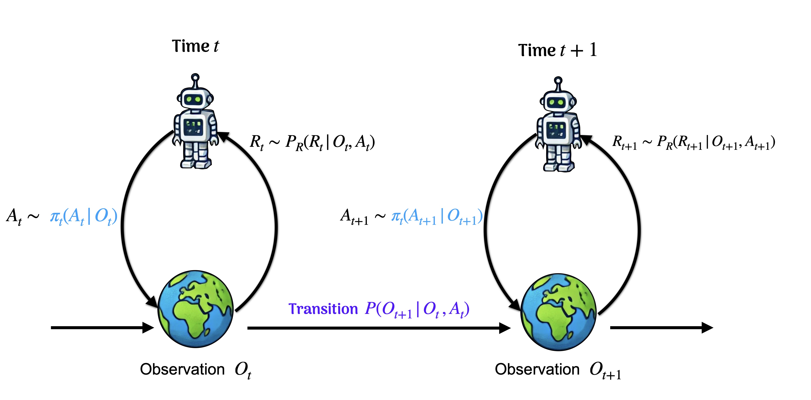

About
I am an Assistant Professor in the Department of Statistics at Florida State University.
I earned my PhD in Biostatistics from McGill University in 2022, supervised by Dr. Erica Moodie and Dr. Sahir Bhatnagar.
Research
My research interests include:

Publications
Preprints
- 2026 Bian Z, Wang L, Shi C, and Qi Z. Double Fairness Policy Learning: Integrating Action Fairness and Outcome Fairness in Decision-making.
- 2026 Bian† Z, Biggs† M, Gao† R, and Qi† Z. Beyond Demand Estimation: Consumer Surplus Evaluation via Cumulative Propensity Weights.
- 2024 Bian Z, Qi Z, Shi C, and Wang L. A Tale of Two Cities: Pessimism and Opportunism in Offline Dynamic Pricing.
Published & Accepted
- 2025 Bian Z, Shi C, Qi Z, and Wang L. Off-policy Evaluation in Doubly Inhomogeneous Environments. Journal of the American Statistical Association, 120(550), 1102–1114.
- 2024 Bian Z, Moodie EEM, Shortreed S, Lambert S, Bhatnagar SR. Variable Selection for Individualized Treatment Rules with Discrete Outcomes. Journal of the Royal Statistical Society, Series C, 73(2), 298–313.
- 2023 Moodie EEM, Bian Z, Coulombe J, Lian Y, Yang Y, and Shortreed S. Variable selection in high dimensions for discrete-outcome individualized treatment rules. Biostatistics, 25(3), 633–647.
- 2023 Bian Z, Moodie EEM, Shortreed S, Bhatnagar SR. Variable Selection in Regression-based Estimation of Dynamic Treatment Regimes. Biometrics, 79(2), 988–999.
- 2023 Bian Z, Moodie EEM, Shortreed S, Bhatnagar SR. Tailoring Variable Selection and Ranking for Optimal Treatment Decision. Handbook of Statistical Methods for Precision Medicine. Chapman & Hall/CRC.